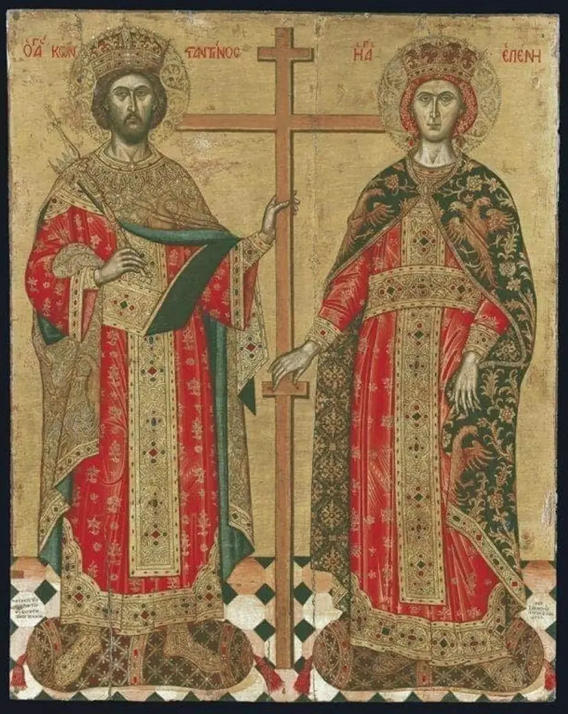
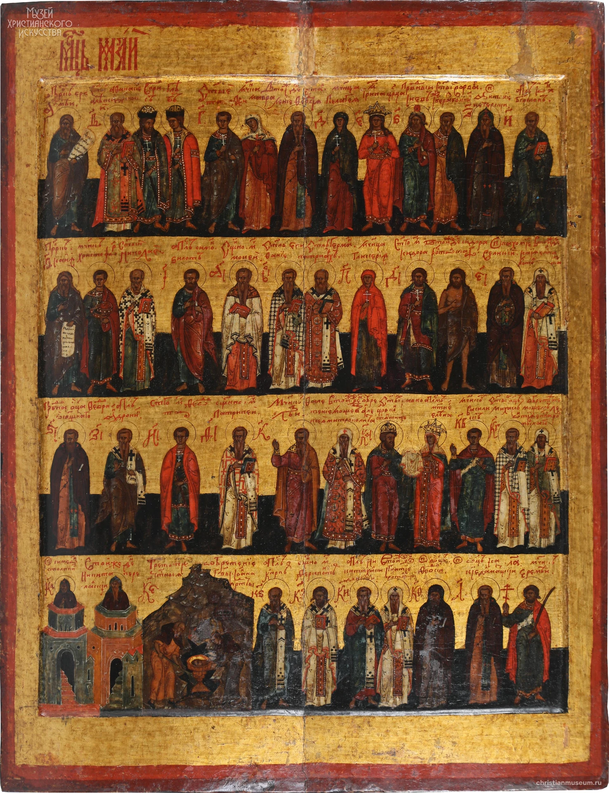
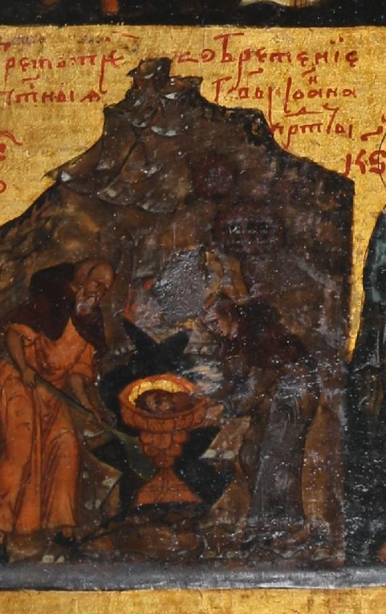

아직 펼치지 않은 카드1월 7일의 성탄과 이름의 날 · 3이름 축일(명명일)그리스에서는 5월 21일이 되면 온 나라가 들썩여요. 콘스탄티노스와 엘레니라는 이름을 가진 사람들에게 무슨 날일까요?생일보다 더 크게 축하하는 ‘이름의 날’이 있대!
1월 7일 · 5월 21일그리스 · 정교회 달력과 이름
이름 축일(명명일)
그리스에서는 5월 21일이 되면 콘스탄티노스와 엘레니라는 사람들이 한꺼번에 축하를 받아요. 교회 달력에서 그날이 콘스탄티누스 황제와 어머니 헬레나를 기억하는 날이기 때문이에요. 두 이름을 그리스 말로 부르면 콘스탄티노스와 엘레니예요. 400년 전 러시아에서 그린 달력 이콘(교회에서 쓰는 거룩한 그림)에서, 그날의 이름들을 직접 찾아보세요.
그리스에서는 생일 말고 ‘이름의 날’도 축하한대. 교회 달력에 날마다 성인의 이름이 적혀 있거든. 옛날 그림 달력에서 이름들을 같이 찾아볼까?
검수 전 시안이에요(기준서 1판). 이름 축일 풍습은 그리스 신문과 크레타 안내 누리집을, 이콘은 소장 미술관의 설명을 따랐어요. 자료마다 다른 점은 따로 적었어요. 상상은 ‘눈 감고 상상해 보기’에만 썼어요.
시안 확인용카드 단계 미리 보기
1
1월 7일의 야니스
그리스에서 1월 7일은 야니스(요안니스)와 야나(요안나)의 이름 축일이에요. 둘 다 ‘요한’에서 온 그리스 이름이에요. 이날 교회는 세례 요한을 기억해요.
정교회(그리스·러시아 같은 동방 교회)는 큰 축일 다음 날, 그 일에 함께한 성인을 기억해요. 1월 6일은 예수께서 요한에게 세례받으신 일을 기억하는 ‘신현 축일’(하나님이 드러나신 날)이에요. 그래서 다음 날에는 세례를 준 요한을 기억해요.

위 이콘은 1620년대에 러시아의 이콘 화가 프로코피 치린이 그린 세례 요한이에요. 등에 천사 같은 날개가 있어요.
복음서는 ‘내가 내 사자(심부름꾼)를 네 앞에 보낸다’는 옛 예언이 요한을 가리킨다고 해요. 옛 러시아 이콘은 이 말씀을 따라 요한을 날개 단 ‘광야의 천사’로도 그렸어요.
요한이 든 금빛 그릇에는 아기 그리스도가 누워 있어요. 그릇 위의 ‘ІС ХС’는 ‘예수 그리스도’를 줄인 글자예요. 오른쪽 아래 나무뿌리 옆에는 도끼가 놓여 있어요.
그리스에서는 1월 7일이 ‘야니스’라는 이름을 가진 사람들의 날이야. 세례 요한을 기억하는 날이거든.
물어보기요한의 등에 무엇이 달려 있어?
2
달력 속 이름 찾기
정교회 달력에는 날마다 기억하는 성인이 있어요. 아래 이콘은 그 달력을 그림으로 옮긴 ‘미네야’ 이콘이에요. 한 달 동안 기억하는 성인과 축일을 날짜 차례대로 그렸어요.
17세기 초 러시아 가운데 지방에서 그린 5월 달력이에요. 줄마다 왼쪽에서 오른쪽으로 날짜가 흘러요. 그림 위 숫자를 눌러 5월의 이름들을 찾아보세요.
그림 위 숫자를 하나씩 눌러 5월 달력 속 이름들을 찾아보세요.

「미네야 5월」 이콘, 17세기 첫 25년, 러시아 가운데 지방. 모스크바 신학 아카데미 ‘교회 고고학 진열실’(그리스도교 미술관) 소장 · 그림: 이름 모를 러시아 이콘 화가 · 퍼블릭 도메인 · 위키미디어 공용
그림 위의 숫자나 아래 번호를 눌러 보세요.
5월 달력의 다섯 곳을 다 찾았어요. 이 달력 속 성인마다, 같은 이름을 가진 누군가에게는 이름 축일이에요.
그리스에서 이름 축일은, 그 사람이 가진 이름의 성인을 교회가 기억하는 날이에요. 그래서 이 달력 속 성인 한 사람 한 사람이, 같은 이름을 가진 누군가의 축일이 돼요.
이날 집주인은 문을 열어 두고, 친구와 친척은 초대받지 않아도 꽃이나 단것을 들고 들러요. 멀리 사는 사람은 전화나 문자로 ‘흐로니아 폴라(여러 해 건강하기를)!’를 보내요.
그리스 친구의 이름 축일을 달력에서 찾아볼까요? 친구 이름을 골라 보세요.
이 그림은 5월 달력이야. 날마다 기억하는 성인이 날짜 차례대로 그려져 있어.
물어보기왕관을 쓴 두 사람은 어디에 있을까?
눈 감고 상상해 보기
5월 21일 아침, 문이 활짝 열린 집이에요. 부엌에서 커피 향이 퍼지고, 식탁에는 단것이 담긴 접시가 놓여 있어요. 전화벨이 몇 번이나 울려요. 초인종이 울리고, 꽃을 든 이웃이 웃으며 들어와요. “흐로니아 폴라!” 오늘 이 집의 엘레니처럼, 같은 이름을 가진 수많은 이웃이 저마다 축하를 받아요.
눈을 감아 봐. 문이 활짝 열린 집이야. 맛있는 냄새가 나고, 꽃을 든 친구가 “흐로니아 폴라!” 하고 들어와.
나의 자리
내 이름에는 어떤 뜻이나 이야기가 담겨 있나요? 그 이름을 지어 준 사람은 무엇을 바랐을까요?
내 이름은 무슨 뜻이야? 누가 지어 줬어?
마음에 닿는 한 줄을 고르거나 직접 써 보세요. 한 줄을 남기면 이 자리의 도장이 찍혀요. 이 기기에만 저장돼요.
더 깊이
이야기를 보다 궁금해질 만한 것들이에요. 답을 읽거나 짧은 영화로 보세요.
1월 7일은 성탄이라던데, 그리스에서는 왜 요한의 날이에요?

요한의 머리를 ‘세 번째로 찾았다’는 게 무슨 말이에요?
뒷이야기
아직 펼치지 않은 이야기예요. 누르면 이야기가 펼쳐지고 색이 돌아와요. 더 알고 싶으면 근거를 따라가 보세요.
다 펼치면, 다음에 오실 때 새 이야기가 찾아와요.
오늘의 뒷이야기는 여기까지예요. 다음에 오시면 새 이야기가 기다리고 있어요.
펼친 뒷이야기 · 누르면 다시 볼 수 있어요
더 찾아보기
기록마다 다른 점
찾아가기 전에 물을까 To Vima는 친구와 친척이 초대 없이 들른다고 쓰고, 크레타 안내 누리집은 찾아가도 되는지 먼저 물어보라고 해요. 두 글의 설명이 달라요.
세례 요한을 만나는 말씀
세례 요한 이야기는 복음서 곳곳에 나와요. 말씀은 뜻만 옮기고, 본문은 대한성서공회 개역개정으로 이어 드려요.
마태복음 3장 요한이 광야에서 회개를 외치고, 요단강에서 예수께 세례를 줘요. 10절에는 ‘도끼가 이미 나무뿌리에 놓였다’는 요한의 말이 나와요.
마가복음 1장 2~8절 ‘내가 내 사자를 네 앞에 보낸다’는 예언과 함께 요한이 등장해요. 날개 단 요한 이콘의 바탕이 된 말씀이에요.
요한복음 1장 29절 요한이 예수를 가리켜 ‘하나님의 어린 양’이라고 말해요.
더 찾아보기
확인한 날 · 2026년 11월 18일 · 바뀌기 쉬운 정보라 정기적으로 다시 확인해요
그리스의 이름 축일 달력 누리집에서는 날마다 그날 축하받는 이름을 찾아볼 수 있어요. 아는 그리스 친구가 있다면, 그 이름의 날에 짧은 인사를 보내 보세요.
5월 달력 다 찾기 금박
「미네야 5월」 이콘 속 다섯 곳을 모두 찾아 읽으면 금박이 입혀져요.
그림 속 다섯 곳을 모두 찾아 읽기
친구의 이름 축일 채색
둘 가운데 하나만 해도 카드가 채색돼요.
친구 이름을 골라 이름 축일 찾아보기
아이와 함께 ‘영화처럼 보기’를 끝까지 보기
근거 보기 (30)
- 미국 정교회(OCA) 5월 21일 「사도와 같은 콘스탄티누스 황제와 어머니 헬레나」 — 313년 밀라노 칙령, 수도를 비잔티움(콘스탄티노폴리스)으로, 헬레나가 326년 예루살렘에서 십자가를 찾음, 십자가 일부를 아들에게, 사도와 같은 성인
- 키클라데스 미술관(CAMU) 「성 콘스탄티누스 이콘」 — 아테네 비잔틴 박물관의 같은 꼴 이콘 둘: 콘스탄티누스가 헬레나와 십자가를 함께 붙잡고 오른손에 홀, 금빛 머리 둘 독수리가 있는 망토
- 미국 정교회(OCA) 5월 25일 「세례 요한 머리의 세 번째 발견」 — 올리브 산·에메사·코마나, 성상 파괴 때 땅에 숨김, 850년쯤 세 번째 발견, 5월 25일 콘스탄티노폴리스의 궁정 교회로
- 미국 정교회(OCA) 5월 24일 「놀라운 산의 젊은 시메온」 — 521년 안티오키아, 여섯 살 지진, 기둥 위의 수도원장 요한, 일곱 살 기둥, 열한 살 40피트 기둥, 596년, 기둥 위 68년
- 미국 정교회(OCA) 5월 24일 「페레슬라블의 기둥 성인 니키타」 — 세금 징수원, 이사야 1장 16절, 쇠사슬, 땅에 판 둥근 구덩이 기둥, 1186년 쇠사슬을 은으로 안 친척들에게 죽음
- 미국 정교회(OCA) 5월 14일 「로스토프의 이시도르」 — 독일의 부유한 집, 재산을 나눔, 떠돎, 로스토프의 오두막, 그리스도를 위한 바보(고전 4:10), 1474년
- 미국 정교회(OCA) 5월 9일 「니콜라오 유해를 바리로 옮김」 — 1087년 바리·베네치아 상인, 무장한 47명, 5월 8일 바리 도착, 5월 9일 성 스테파노 교회, 러시아 교회는 곧 이날을 축일로
- 미국 정교회(OCA) 5월 31일 「코마나의 순교자 헤르미아스」 — 늙은 군인, 안토니누스 피우스 때, 제사를 거절, 총독 세바스티아누스의 칼
- 미국 정교회(OCA) 5월 2일 「보리스와 글레프 유해를 옮김」 — 야로슬라프의 형제, 칼을 들지도 달아나지도 않은 수난자, 러시아·비잔틴 교회가 함께 높인 첫 러시아 성인, 1115년 비시고로드
- 미국 정교회(OCA) 「모든 성인의 날」 — 오순절 다음 일요일, 알려진 성인과 하나님만 아시는 성인
- Neos Kosmos(그리스계 호주 신문) 「이름에 담긴 것」 — 첫아들은 친할아버지, 첫딸은 친할머니, 둘째 아들은 외할아버지의 이름, 사촌들과 함께 축하, 성인이 없는 이름은 모든 성인의 날, 여러 해 = 행운·번영·건강을 빎
- 애너벨 호텔(키프로스 파포스) 「이름 축일이란」(2020) — 아프로디테처럼 옛 그리스 신화의 이름, 지내지 않거나 모든 성인의 날에
- azbyka.ru 『러시아 이콘: 모습과 상징』 「세례 요한」 — 13세기 끝 무렵부터 날개 단 ‘광야의 천사’, 날개의 뜻, 낙타털 옷, 열매 없는 나무 곁의 도끼(설교), 두루마리 글, 그릇에 자기 머리를 든 러시아 이콘, 어린 양을 든 요한, 십자가 지팡이
- 게오르기오스 테오토키스, 「비잔틴의 머리 둘 독수리」(Medievalists.net 2025.4.28) — 팔라이올로고스 황제 집안의 표시, 황제 발밑의 방석(수페디온), 1374년 그림 속 황후의 옷, 오늘날 총대주교청·아토스 산
- 브리태니커 「옛 교회 슬라브어」 — 12세기 뒤의 여러 꼴이 교회 슬라브어, 오늘날까지 예배 말로 쓰임
- To Vima(2025.5.21), 「엘레니와 콘스탄티노스처럼 이름 축일 보내기」 — 이름 축일의 뜻, 생일보다 크게 느낌, 초대 없이 꽃·단것·포도주를 들고 들름, 커피와 단것, ‘흐로니아 폴라(여러 해)’, 전화와 문자, 5월 21일, 콘스탄티노스 6.0%·엘레니 5.2%(2011년 인구 조사), 공휴일이 아님, 동료·친구들에게 초콜릿, 교회에 다니지 않아도 지킴, 8월 15일 성모 축일 무렵 나라가 쉼
- Explore Crete, 「그리스의 이름 축일」 — 날마다 성인, 1월 7일 세례 요한(야니스·요안니스, 야나·요안나), 5월 21일(코스타스·콘스탄티노스, 엘레니), 8월 15일(마리아·마리오스), 4월 23일 게오르기오스가 사순절이면 부활절 뒤로, 찾아가도 되는지 묻기, 타베르나 초대
- 미국 정교회(OCA) 1월 6일 — 신현 축일은 주님의 세례로 삼위일체를 드러낸 축일, 요한이 세례를 줌
- 미국 정교회(OCA) 1월 7일 — 큰 축일 다음 날 그 일에 함께한 성인을 기억, 세례 요한 회합, 5월 25일 머리의 세 번째 발견 등 요한을 기억하는 날들
- 미국 정교회(OCA) 5월 1일 — 예언자 예레미야
- 미국 정교회(OCA) 5월 24일 — 기둥 성인 시메온(기둥 위 수행, 열한 살에 40피트 기둥), 페레슬라블의 니키타
- 그리스도교 미술관(모스크바 신학 아카데미 교회 고고학 진열실), 「미네야 5월」 이콘 — 17세기 첫 25년, 러시아 가운데 지방, 한 달의 축일과 성인을 날짜 차례대로, 왼쪽에서 오른쪽, 글씨는 옛 방식 날짜, 그려진 성인 목록
- 크라베츠키, 『교회 슬라브어 교본』 3과(azbyka.ru) — 글자로 쓰는 숫자(а 1, д 4, є 5, к 20), 십의 자리 다음 일의 자리
- 『옛 러시아 미술 이름·개념 사전』(azbyka.ru) 「세례 요한」 — 말라기 3장 1절·이사야 40장 3절을 요한에게 이어 읽는 복음서(마 11:10, 막 1:2), 천사 모습의 요한 이콘
- azbyka.ru, 「이콘의 글씨」 — ‘ІС ХС’는 예수 그리스도의 줄임 글자
- 「옛 방식과 새 방식」(azbyka.ru) — 두 달력의 차이 13일(1900~2100년)
- azbyka.ru 숫자 바꾸기 표 — 교회 슬라브 숫자 일의 자리(а 1 … д 4 … є 5 …)
- 알자지라(2026.1.7) — 그리스 등 여러 정교회가 고친 달력으로 옮김
- 위키미디어 공용 파일 설명(API로 확인): 프로코피 치린 「세례 요한 — 광야의 천사」, 1620년대, 스트로가노프 화파, 트레티야코프 미술관
- 위키미디어 공용 파일 설명(API로 확인): 「미네야 5월」 그림 주석 — 성인마다 이름과 그림 속 자리(찾아보기 점을 놓은 길잡이)
그림·사진·소리 출처
- 그림: 프로코피 치린 · 퍼블릭 도메인 · 위키미디어 공용
- 그림: 이름 모를 러시아 이콘 화가 · 퍼블릭 도메인 · 위키미디어 공용
- 그림: 이름 모를 러시아 이콘 화가 · 퍼블릭 도메인 · 위키미디어 공용
- 그림: 이름 모를 러시아 이콘 화가 · 퍼블릭 도메인 · 위키미디어 공용
- 그림: 이름 모를 러시아 이콘 화가 · 퍼블릭 도메인 · 위키미디어 공용
- 그림: 이름 모를 러시아 이콘 화가 · 퍼블릭 도메인 · 위키미디어 공용
- 그림: 이름 모를 러시아 이콘 화가 · 퍼블릭 도메인 · 위키미디어 공용
- 그림: 이름 모를 러시아 이콘 화가 · 퍼블릭 도메인 · 위키미디어 공용
- 그림: 이름 모를 러시아 이콘 화가 · 퍼블릭 도메인 · 위키미디어 공용
- 그림: 이름 모를 러시아 이콘 화가 · 퍼블릭 도메인 · 위키미디어 공용
- 그림: 이름 모를 러시아 이콘 화가 · 퍼블릭 도메인 · 위키미디어 공용
- 그림: 프로코피 치린 · 퍼블릭 도메인 · 위키미디어 공용
- 그림: 프로코피 치린 · 퍼블릭 도메인 · 위키미디어 공용
- 그림: 프로코피 치린 · 퍼블릭 도메인 · 위키미디어 공용
- 그림: 프로코피 치린 · 퍼블릭 도메인 · 위키미디어 공용
- 5월 21일에 함께 기억하는 콘스탄티누스와 헬레나의 이콘이에요 · 그림: 엠마누엘 차네스(1669) · 퍼블릭 도메인 · 위키미디어 공용
‘처음 만나는 기독교 문화’의 깊은 카드예요. 카드 단계와 남긴 글은 이 기기에만 저장돼요.